User documentation
Fena Media Manager
Virtual folders for the WordPress media library. Organize media in folders and subfolders without moving a single file.
Introduction
Fena Media Manager adds virtual folders to the native WordPress media library. You get a folder sidebar next to the media grid, folders and subfolders in any depth, and quick ways to put media into them – by drag and drop, with bulk buttons, in the list view and in the media modal.
Important Folders are virtual. Fena Media Manager never moves or renames files. File paths, URLs, attachment IDs and metadata stay exactly as they are, so existing links and embedded images keep working. One file can be in several folders at once.
At a glance
- Folders and subfolders in a full-height sidebar, with All Media, Unassigned and a media count per folder.
- Drag and drop for media and folders, bulk assignment, list view filter and bulk actions, folder filter in the media modal.
- Search, five sort orders and manual order. Colors and icons for folders. Folder Lock for the folder structure.
- Upload straight into a folder, with an upload progress panel.
- Keyboard shortcuts for the folder tree, a collapsible panel and a drawer on phones.
- Import and export of the folder structure as JSON.
- No custom database tables, no external services, nothing deleted when you deactivate or uninstall.
- Free, with all features included – there is no Pro version.
Requirements
WordPress 6.4 or later and PHP 7.4 or later. Version 1.0.0 was tested on WordPress 6.4.14 with PHP 7.4.33 and on WordPress 7.1.4.
Installation
Install the plugin
- In your WordPress admin, go to Plugins → Add New Plugin and click Upload Plugin.
- Choose the plugin ZIP file (
fena-media-manager-1.0.0.zip) and click Install Now. - Click Activate Plugin.
- Open Media → Library in the grid view. The folder sidebar appears next to the media.
- Optional: adjust the defaults in Media → Fena Media Manager (see Settings).
Update an installed copy
Upload the new ZIP the same way. WordPress shows that the plugin is already installed and offers Replace current with uploaded. Your folders, assignments and settings stay in the database and are not touched by a replacement.
Default folders
On first activation six example folders are created, but only if no folders exist yet: Hero Images, Hero Slider, Blog Images, Backgrounds, Logos & Icons and Videos. You can rename, move or delete them like any other folder.
Deactivating and uninstalling
Deactivating or deleting the plugin deletes nothing. Folders, assignments and settings remain in the database and are available again after reactivation.
Getting started
Folders appear in Media → Library in the grid view. The list view has a folder filter and bulk actions instead (see Organizing media).
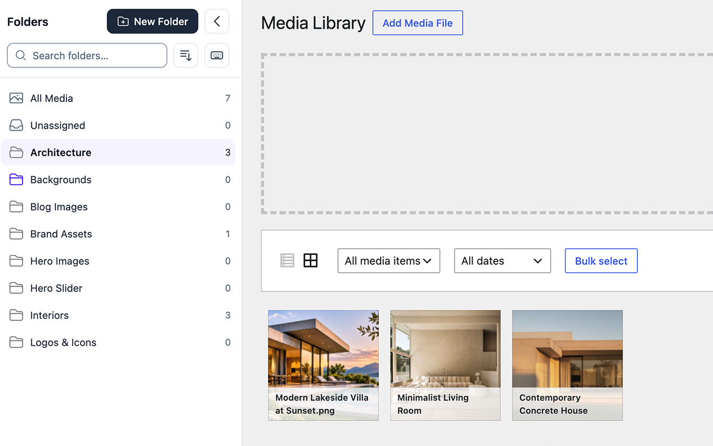
The sidebar
- Header: the title, the New Folder button and the button that collapses the panel.
- Search and sort: a search field for folders, the sort menu and the Keyboard shortcuts button.
- All Media shows every file. Unassigned shows files that are in no folder.
- Folder rows show the folder name and its media count. A small arrow expands or collapses subfolders. Each row has a New subfolder button and a More actions menu.
Your first folders
- Open Media → Library and make sure the grid view is active.
- Click a folder in the sidebar. The grid now shows only the media in that folder.
- Click All Media to see everything again.
- Drag a file from the grid onto a folder, or use the other ways described in Organizing media.
Note A folder shows only its own media, not the media of its subfolders. The count next to a folder follows the same rule.
Folders and subfolders
Create a folder
- Click New Folder in the sidebar header.
- Type a name in the field that appears.
- Press Enter to create the folder. Esc cancels.
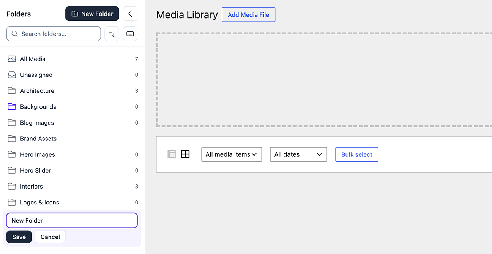
Create a subfolder
- Move the pointer over a folder row, or focus the row with the keyboard.
- Click the New subfolder button (the plus icon) of that row.
- Type the name and press Enter.
Subfolders can be nested in any depth. The tree can be expanded and collapsed with the arrow in front of each folder.
Folder names
- Names must be unique among siblings. The comparison is not case-sensitive.
- The maximum length is 200 characters.
- Names that WordPress would change are rejected: HTML, line breaks and leading or trailing spaces.
The folder menu
Every folder has a More actions menu with the actions that are possible for that folder: Rename, Move to…, Appearance…, Move up / Move down, Lock folder / Unlock folder and Delete. Actions that are not possible – for example because the folder is locked – are not shown.
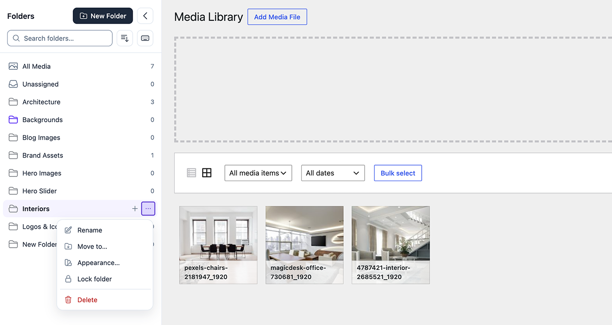
Rename a folder
- Open the folder menu and choose Rename, or focus the folder and press F2.
- Edit the name and press Enter.
Move a folder with “Move to…”
- Open the folder menu and choose Move to….
- Pick the new parent in the destination list, or choose the top level.
- Confirm with Move.
A folder cannot be moved into itself or into one of its own subfolders. If the destination already has a folder with the same name, the dialog offers to move the folder under a new name.
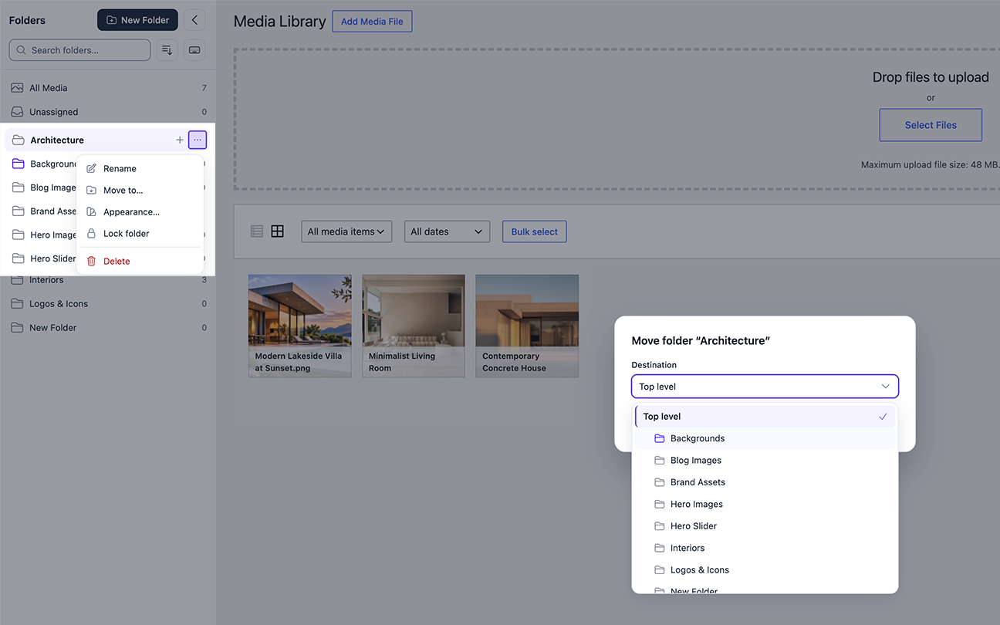
You can also move folders by drag and drop, and change their order with Move up and Move down (see Search and sorting).
Delete a folder
- Open the folder menu and choose Delete, or focus the folder and press Delete.
- Confirm in the Delete folder? dialog.
Note Deleting a folder never deletes media. The files stay in the media library, and the subfolders of the deleted folder move up one level. A locked folder, or a folder that contains a locked folder, cannot be deleted (see Folder Lock).
Organizing media
One file can be in several folders at the same time. Unassigned lists the files that are in no folder. There are several ways to assign media; all of them are available without drag and drop.
Bulk selection in the grid
- In Media → Library click Bulk select.
- Click the files you want to assign.
- Use the buttons that appear on the folder rows: + adds the selection to the folder, → moves it from the open folder to that folder, and − removes it from the folder.
Only the folders you name change. The other assignments of the selected files stay as they are.
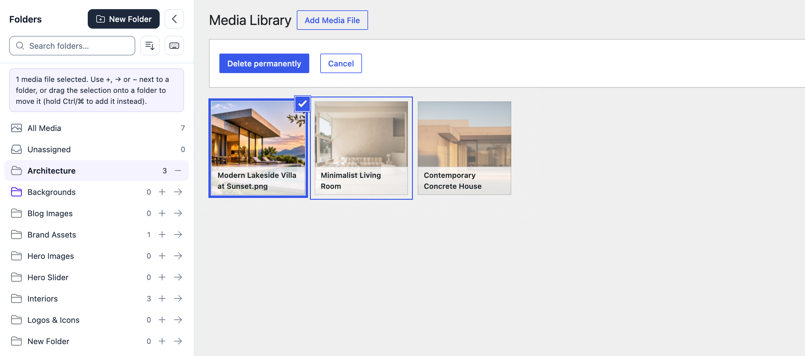
Folder checkboxes in the attachment details
- Click a file in the grid to open its details (or open the attachment edit screen).
- Find the Folders field and tick or untick the folders for this file.
- In the media library and the media modal the change is saved automatically. On the attachment edit screen, click Update.
List view
- Open Media → Library and switch to the list view.
- Use the folder dropdown above the list to show one folder (the list includes Unassigned with its count).
- Tick the files, choose Add to folder or Remove from folder in the bulk actions, pick the folder and apply.
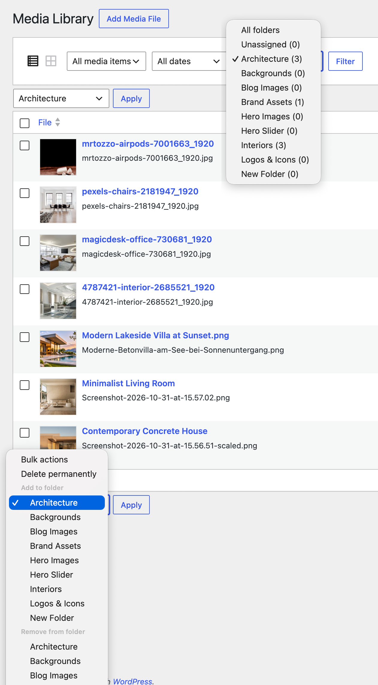
Media modal
The media modal – for example when you click Media Library on an image block in the block editor – has a Filter by folder dropdown next to the core filters. Use it to find a file quickly.
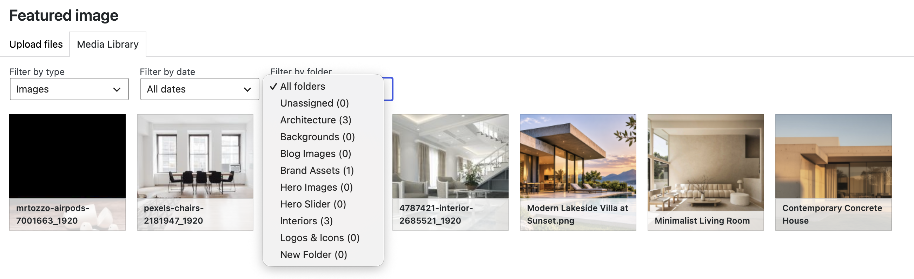
Note The Media tab of the block inserter does not support folders. Use the media modal that opens with the Media Library button of a block.
You can also assign files by drag and drop or by uploading while a folder is open.
Drag and drop
Drag and drop works in the media grid and in the folder sidebar with the mouse or touch. It is not operable by keyboard; every action has an alternative (see the end of this section).
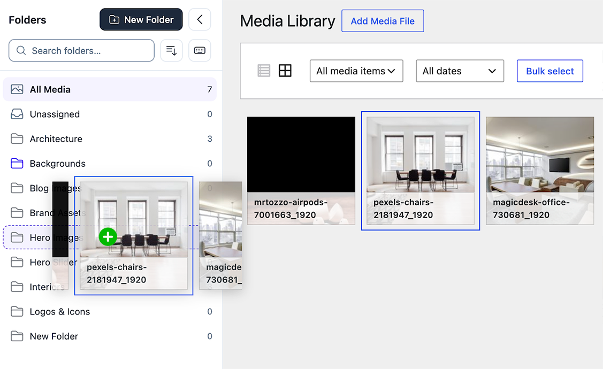
Drag media onto a folder
- Drag one file, or the current selection, from the grid.
- Drop it on a folder in the sidebar.
- Inside an open folder: dropping on another folder moves the media – it is removed from the open folder. Hold Ctrl (⌘ on Mac) while dropping to add it instead.
- From All Media or Unassigned: dropping always adds the media to the folder.
Drag folders
Every folder row has three drop zones:
| Zone | Result |
|---|---|
| Top 30 % | Places the dragged folder before this row, on this row’s level. |
| Middle 40 % | Moves the dragged folder into this folder (after its existing subfolders). |
| Bottom 30 % | Places the dragged folder after this row, on this row’s level. |
An indented line or a highlight shows the exact target before you drop. Invalid targets show nothing. The bottom edge of an expanded folder drops into it.
- Moving a folder to another level (including up a level or to the top level) works in every sort order.
- Changing the order within a level by dragging needs the Manual order sort.
Without drag and drop
- Move folders: Move to… in the folder menu.
- Reorder folders: Move up and Move down in the folder menu (manual order), or Ctrl + ↑ / ↓.
- Assign media: the bulk select buttons and the Folders checkboxes in the attachment details.
Search and sorting
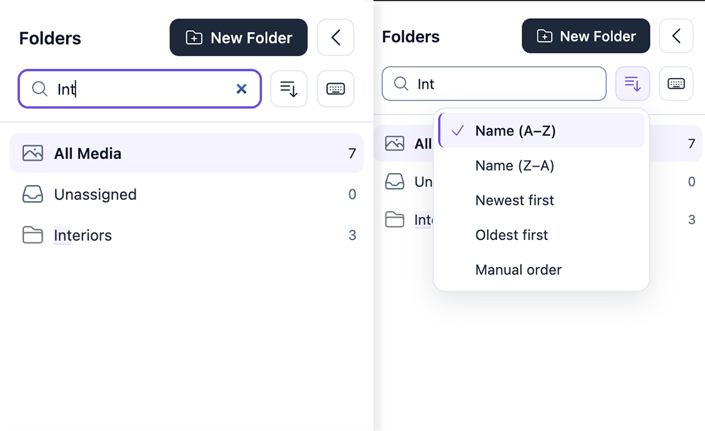
Search folders
- Click the search field above the folder list and start typing.
- The list updates shortly after you stop typing. Matches are highlighted and their parent folders stay visible.
- Press ↓ to jump to the first result. Press Esc to clear the search.
The search ignores case and accents: “cafe” finds “Café”. The number of results is announced to screen readers.
Sort order
Open the sort menu (the button next to the search field) and choose one of five orders: Name (A–Z), Name (Z–A), Newest first, Oldest first or Manual order.
- The sort order is saved per user. Users who have not chosen one get the default from the settings page.
- The manual order itself is shared by all users.
Manual order
- Choose Manual order in the sort menu.
- Drag folders to a new place, or open the folder menu and choose Move up or Move down.
The keyboard shortcut Ctrl + ↑ / ↓ (⌘ + ↑ / ↓ on Mac) does the same. It works in manual order only and not while a search is active.
Colors and icons
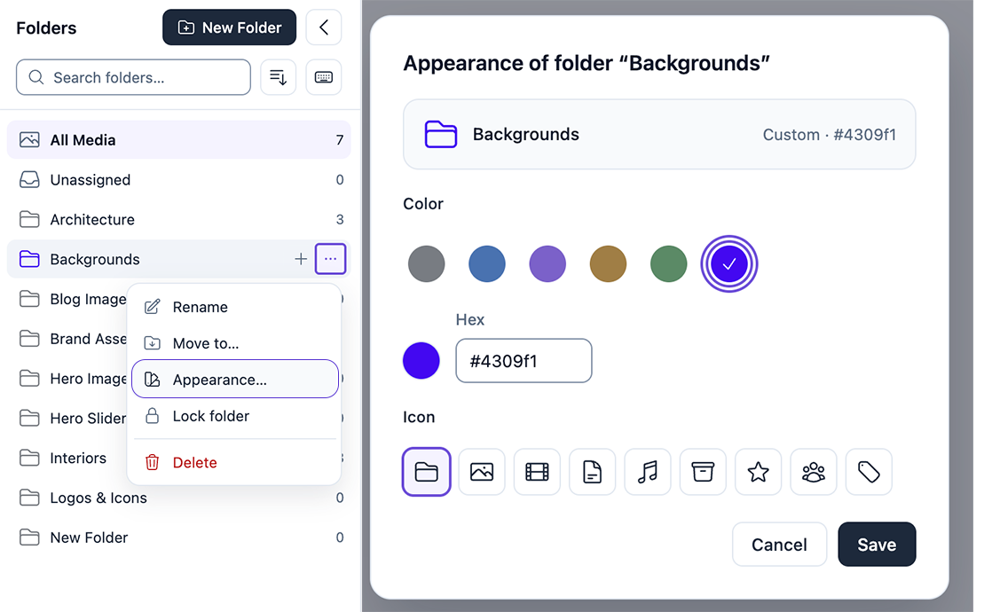
- Open the folder menu and choose Appearance….
- Pick a color. The preview in the dialog updates as you choose.
- Optionally pick an icon.
- Click Save.
Colors
Gray (the default), Blue, Violet, Sand, Green, or a custom color: use the color picker or type a hex value in the form #rrggbb. Only the folder symbol is colored.
Icons
The default folder, or one of eight icons shown next to the folder symbol: Image, Video, Document, Audio, Archive, Star, People and Tag.
The open folder shows an open folder symbol; all other folders show a closed one. The default appearance (gray, no icon) stores nothing.
Note Colors and icons can still be changed on a locked folder.
Folder Lock
Important Folder Lock protects the folder structure only. It is not a password and not access protection. Locked folders and their media stay visible and usable for everyone who has access to the media library. Lock state is not included in the JSON export.
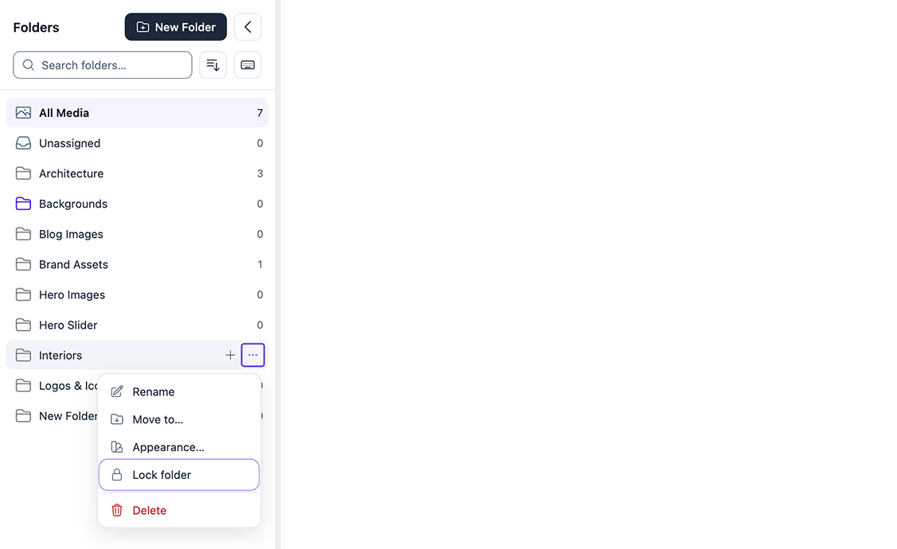
Lock or unlock a folder
- Open the folder menu.
- Choose Lock folder. A small lock icon now marks the folder.
- To remove the lock, open the menu again and choose Unlock folder.
Locking and unlocking requires the permission to manage folders (see Permissions).
What a lock does
| Situation | What happens |
|---|---|
| Not possible | Rename, move, reorder, delete, create new subfolders inside, move another folder into it. |
| Not possible for a folder that contains a locked folder | Move and delete. |
| Still possible | Open the folder, upload into it, assign and remove media, change color and icon. |
The lock is enforced on the server for every change – in the interface, through the REST API and during a JSON import – not only in the sidebar. Rejected changes leave the folders untouched.
Uploads
Upload into a folder
- Open a folder in the sidebar.
- Upload files in the media library grid (drop files onto the page or click the Add New Media File button at the top of the library) or in the media modal.
- The new files are assigned to the open folder.
Which folder gets the upload
| Selected in the sidebar | Where the upload goes |
|---|---|
| A folder | That folder. An open folder always takes precedence. |
| All Media | The default upload folder from the settings, if you have set one; otherwise no folder. |
| Unassigned | Stays unassigned. |
The default upload folder applies to uploads started in the media library grid or in the media modal. Uploads through the separate upload page (Media → Add Media File, media-new.php), the REST API or code are not affected.
Upload progress panel
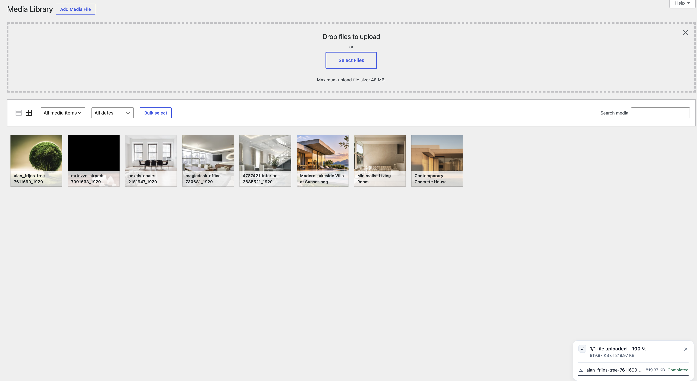
In the media grid a panel at the bottom right shows each file with its name and size, the real progress per file and in total, Processing… while the server creates image sizes, and the WordPress error message for every file that failed. You can collapse the panel while uploading and close it when the uploads have finished.
Note The panel only follows the regular WordPress uploader. It does not upload files itself and sends no requests of its own. Percentages appear only when the browser reports real progress. The panel is shown in the media grid only.
Keyboard shortcuts
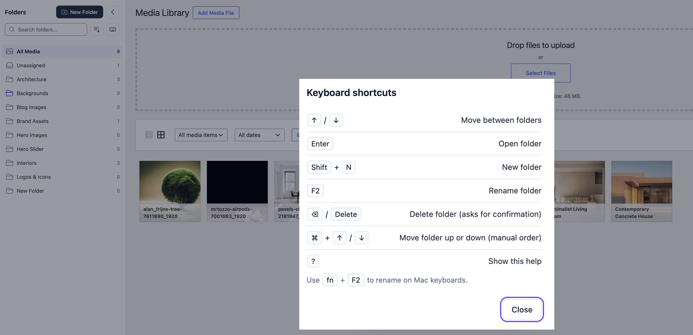
Shortcuts work while the keyboard focus is in the folder sidebar.
| Shortcut | Action |
|---|---|
| ↑ / ↓ | Move between the visible folders (↑ on the first row goes to the search field). |
| Enter | Open the focused folder. |
| Shift + N | New folder. |
| F2 (Mac: fn + F2) | Rename the focused folder. |
| Delete (Mac: ⌫ or Delete) | Delete the focused folder. It always asks for confirmation. |
| Ctrl + ↑ / ↓ (Mac: ⌘ + ↑ / ↓) | Move the folder up or down. Manual order only, not while searching. |
| ? | Show or hide the keyboard help. |
When shortcuts do not act
- While you type in the search field or in an inline name field.
- While a dialog or a menu is open, and during drag and drop.
- In the media grid itself, so WordPress and browser shortcuts are not affected.
More about shortcuts
- The Keyboard shortcuts button next to the sort button opens the same help without a shortcut. The help shows ⌘ on Mac and Ctrl on Windows and Linux, and lists only the shortcuts you may use.
- Shortcuts follow the same rules as the folder menu: permissions and Folder Lock are respected. If an action is not possible, nothing happens and screen readers hear a short message, for example “Folder “X” is locked.”
- Without permission to manage folders you can use the arrow keys, Enter and the help only.
- There is no shortcut for showing or hiding the folder panel.
Settings
Open Media → Fena Media Manager. The page is available to administrators.
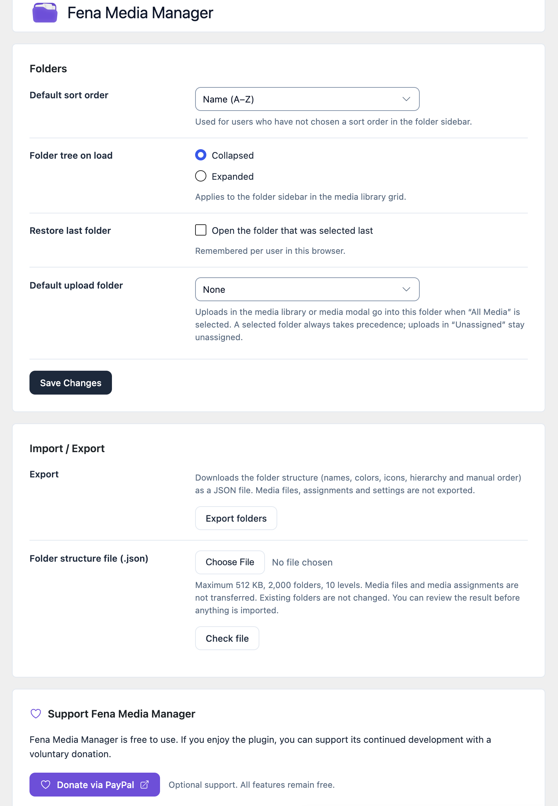
| Setting | What it does |
|---|---|
| Default sort order | Sort order for users who have not chosen one in the sidebar. |
| Folder tree on load | Folders start Collapsed or Expanded when the media library opens. |
| Restore last folder | Opens the folder that was selected last. Remembered per user in this browser. |
| Default upload folder | Folder for uploads started while All Media is selected. A selected folder always takes precedence. “None” means no default. |
| Import / Export | Export and import the folder structure (see Import and export). |
Click Save Changes to apply the settings.
Optional donation link
The settings page has an optional Donate via PayPal button. It is a normal link that opens PayPal.Me in a new tab only when you click it. The plugin works fully without it; all features stay free.
Import and export
Important The export contains the folder structure only: names, hierarchy, manual order, colors and icons. Media files, media assignments, attachment IDs, users, settings and lock states are not exported and not imported. To move media between sites, use the WordPress export/import tools or a migration plugin.
Import and export are on the settings page and require administrator rights.
Export
- Open Media → Fena Media Manager.
- In the Import / Export card, click Export folders.
- Your browser downloads a JSON file.
Import
- On the target site, open Media → Fena Media Manager.
- Choose the JSON file and click Check file. The file is validated; nothing is written yet.
- Read the preview: it shows which folders will be created and which already exist.
- Choose how to treat folders that already exist: Merge (reuse the folder and add missing subfolders) or Skip (leave the folder and its subfolders out).
- Click Import folders, or Cancel to leave everything unchanged.
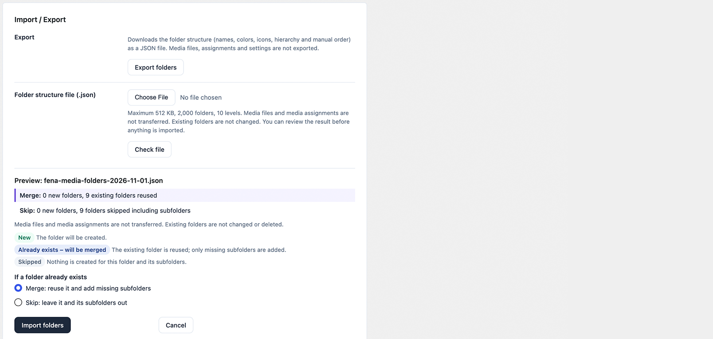
- An import never changes or deletes existing folders or media.
- Limits: 512 KB file size, 2,000 folders, 10 levels.
- Older export files without icons can still be imported.
- Nothing is added below a locked folder.
Note Known limitation: an import is not all-or-nothing. If it stops midway, the folders that were already created remain. The import summary lists them. A file that fails validation is rejected as a whole with the message “Nothing was changed.”
Permissions
Important What you see depends on your role. Users without permission to manage folders still see the folders, but have no New Folder button and no folder menu actions. Which features appear for a user follows the table below.
| Action | Who can do it | Requirement |
|---|---|---|
| Create, rename, move, delete, reorder, change appearance, lock and unlock folders | Administrators and Editors by default | Capability edit_others_posts (changeable with a filter, see below) |
| Assign media to folders | Every user who may upload and edit that file. Authors can organize their own media. | upload_files and permission to edit the file. Checked for every file. |
| Settings page, import and export | Administrators | Capability manage_options |
- When you assign several files and some may not be changed, the others are still assigned and the result mentions the files that were skipped.
- Keyboard shortcuts for users without folder management are limited to navigation, Enter and the help.
- Permissions, nonces and Folder Lock are checked on the server for every request.
For developers
Three filters are available:
fmm_manage_folders_capability– the capability needed to manage folders (defaultedit_others_posts).fmm_default_folders– the folders created on first activation.fmm_donate_url– the optional donation link.
Note fmm_manage_folders_capability is security relevant: every user with the returned capability may create, rename, move and delete folders for the whole site. Return a capability that only trusted roles have, never read or upload_files. Assigning media is not affected.
Troubleshooting
I do not see the folder sidebar
The sidebar appears in the grid view of Media → Library. Switch from the list view to the grid view with the view buttons above the media. The list view has a folder filter and bulk actions instead.
There is no “New Folder” button, or menu actions are missing
Managing folders needs the edit_others_posts capability (Administrators and Editors by default). Without it you see the folders but cannot change them. Some actions also disappear when they are not possible for a folder, for example because it is locked. See Permissions.
I cannot rename, move or delete a folder
The folder, or a folder above it, is probably locked. A locked folder and its subfolders cannot be renamed, moved, reordered or deleted, and a folder that contains a locked folder cannot be moved or deleted. Unlock the locked folder first (see Folder Lock); this needs the permission to manage folders.
My upload did not land in the folder I expected
The open folder always wins. If All Media was selected, the upload goes to the default upload folder from the settings, or to no folder if none is set. If Unassigned was selected, the upload stays unassigned. Uploads through the separate upload page (Media → Add Media File, media-new.php), the REST API or code do not use the folder rules. See Uploads.
An author cannot assign some files
Assigning needs permission to edit each file. Authors can assign their own media, not files uploaded by others. Files that cannot be changed are skipped and the result says so.
A folder looks empty, but its subfolder has media
A folder shows only its own media, not the media of its subfolders. Open the subfolder to see its files. The count next to the folder follows the same rule.
The import was rejected
The file is checked before anything is written. It is rejected, with the message “Nothing was changed”, when it is too large (more than 512 KB), has more than 2,000 folders or more than 10 levels, is not valid JSON, is not a Fena Media Manager export, or has invalid names, icons or colors. Fix the file or export a new one. See Import and export.
The import stopped midway
An import is not all-or-nothing. Folders that were created before the problem remain, and the summary lists what was created and what failed. Delete the folders you do not want, fix the cause and import again with Merge or Skip for existing folders.
After an update the sidebar looks old or broken
Your browser may still use cached styles or scripts. Reload the page with a hard reload (Ctrl + Shift + R, or ⌘ + Shift + R on Mac). If you use a caching plugin or a CDN, clear its cache too.
I cannot use drag and drop with the keyboard
Drag and drop is not keyboard-operable. Use Move to…, Move up / Move down, the bulk select buttons and the Folders checkboxes in the attachment details instead (see Drag and drop).
The block inserter’s Media tab shows no folders
The Media tab of the block inserter does not support folders. Use the Media Library button of a block: the media modal it opens has the folder filter.
FAQ
Are files moved on the server?
No. Folders are virtual. Files stay in the WordPress uploads directory, and file paths, URLs, attachment IDs and metadata are never changed.
Can a file be in more than one folder?
Yes. A file can be assigned to any number of folders. Unassigned shows all files without a folder.
What happens when I delete a folder?
Only the folder is removed. Its media stays in the media library and its subfolders move up one level. Deleting always asks for confirmation.
Does Folder Lock protect files from other users?
No. Folder Lock only prevents accidental changes to the folder structure (rename, move, reorder, delete, new subfolders). It does not hide files or restrict access to them.
Does the export include my media files?
No. The JSON export contains only the folder structure: names, hierarchy, manual order, colors and icons. Media files and media assignments are not transferred. To move media between sites, use the WordPress export/import tools or a migration plugin.
What happens to my folders when I deactivate or delete the plugin?
Nothing is deleted. Folders, assignments and settings remain in the database and are available again after reactivation.
Which uploads use the default upload folder?
Uploads started in the media library grid or in the media modal while All Media is selected. An open folder always takes precedence, and uploads started in Unassigned stay unassigned. Uploads through the separate upload page (Media → Add Media File, media-new.php), the REST API or code are not affected.
Does the block editor’s inserter show folders?
The Media tab of the block inserter does not support folders. The media modal, opened with the Media Library button of a block, has the folder filter.
Can the permissions or default folders be changed?
Yes, with the filters fmm_manage_folders_capability (default edit_others_posts) and fmm_default_folders. See Permissions for the security note.
Does the plugin contact external services?
No. The plugin sends no data to external services. The optional donation button on the settings page is a regular link to PayPal.Me that opens only when you click it.
Is there a Pro version?
No. Fena Media Manager is free and all features are included.
Support
Questions, problems or ideas? Write to omeragicnedzad@icloud.com. Please include your WordPress and PHP version and describe what you did and what you expected.
Support the development (optional)
Fena Media Manager is free and stays free. If you find it useful, you can make a voluntary donation via PayPal.Me (opens in a new tab). Donating is entirely optional.
Credits and license
- Interface icons: Heroicons (opens in a new tab) by Tailwind Labs, Inc., MIT License.
- Fena Media Manager is licensed under the GPLv2 or later.